ทางเดินเงาไร้เสียง
ดูบนแผนที่และวิธีไป วางแผนฟาร์ม
ชั้นล่างในป่ากองไฟ · Lv 86–96
ชั้นล่าง / ดันเจี้ยน
มอนในแมพ (7)
| มอน | Lv | ธาตุ | โซน |
|---|---|---|---|
| ผีดวงไฟ | 88–96 | วิญญาณ | |
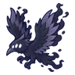 อีกาเงา | 86–92 | มืด | |
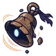 กระดิ่งเงียบ | 86–94 | วิญญาณ | ประตูต้นไม้ดำ |
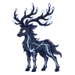 กวางไร้แสง | 88–96 | มืด | |
| เงาเดินได้ | 88–96 | มืด | ประตูต้นไม้ดำ |
| เงาเดินได้ · ร่างเงาม่วง | 88–96 | มืด | |
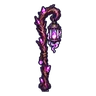 นิกซ์ คนเลี้ยงภูตดวงไฟ บอสผู้ถูกรากสิง | 98–98 | วิญญาณ |
อุปกรณ์ที่ดรอปในแมพนี้
| ของ | โอกาสสูงสุด |
|---|---|
| ตะเกียงเลี้ยงภูต | 0.5% |
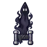 คาทาร์เงาเดินได้ | 0.24% |
| ชุดนักเดินเรือดาว | 0.15% |
| ชุดจารึกรูน | 0.15% |
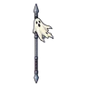 หอกยาวธงผี | 0.12% |
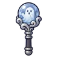 ออร์บผีน้อย | 0.12% |
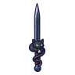 ดาบคู่แมวดำรัตติกาล | 0.12% |
| 0.12% | |
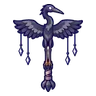 ไม้เชิดหุ่นนกกระสาเงา | 0.12% |
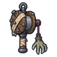 ด้ายเหล็กมือซอมบี้ | 0.12% |
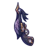 ปืนพกคู่นกกระสาเงา | 0.12% |
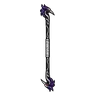 ไม้พลองนกกระสาเงา | 0.12% |
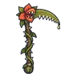 เคียวใหญ่ดอกไม้กินคน | 0.12% |
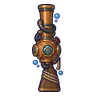 ลูกซองหมวกดำน้ำ | 0.12% |
| ธนูผีน้อยจับมือ | 0.06% |